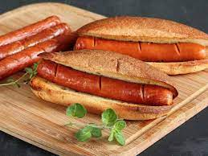

Hotdogs Recipe

This is a recipe list of ingredients needed to make delicious hotdogs, my way.
Note: Some of these ingredients can be interchangeable and changed to
your liking.
Ingredients:
- Hotdog Buns.
- Wieners
- Mayo
- Mustard
- Ketchup
- Onion
- Oil
- Paprika
- Garlic Salt
- Pepper
Steps:
- Start by cutting up half an onion.
- Grab a pan and oil it up.
- Turn on stove and let oil heat up.
- Cut slits into wiener to help it cook.
- Slide wieners into pan and move them around so they cook evenly.
- As wieners finish cooking, apply seasonings.
- Next up, grab onions and toss into left over oil and seasoning until caramilized.
- Grab buns and apply mayo to it with kitchen knife or spoon.
- Toast buns on pan previously used, by placing the inside of them on pan.
- Place your buns on a plate and put wiener in bun.
- Apply onions, mustard, and ketchup on your hotdog.
- Now you finally have your delicious hotdogs and are ready to eat!